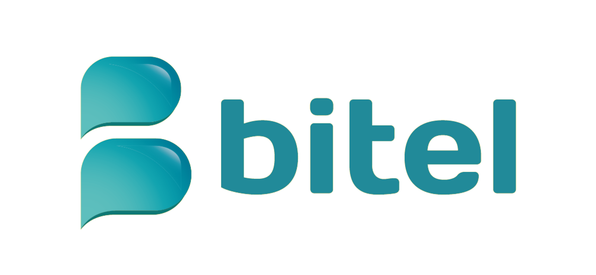
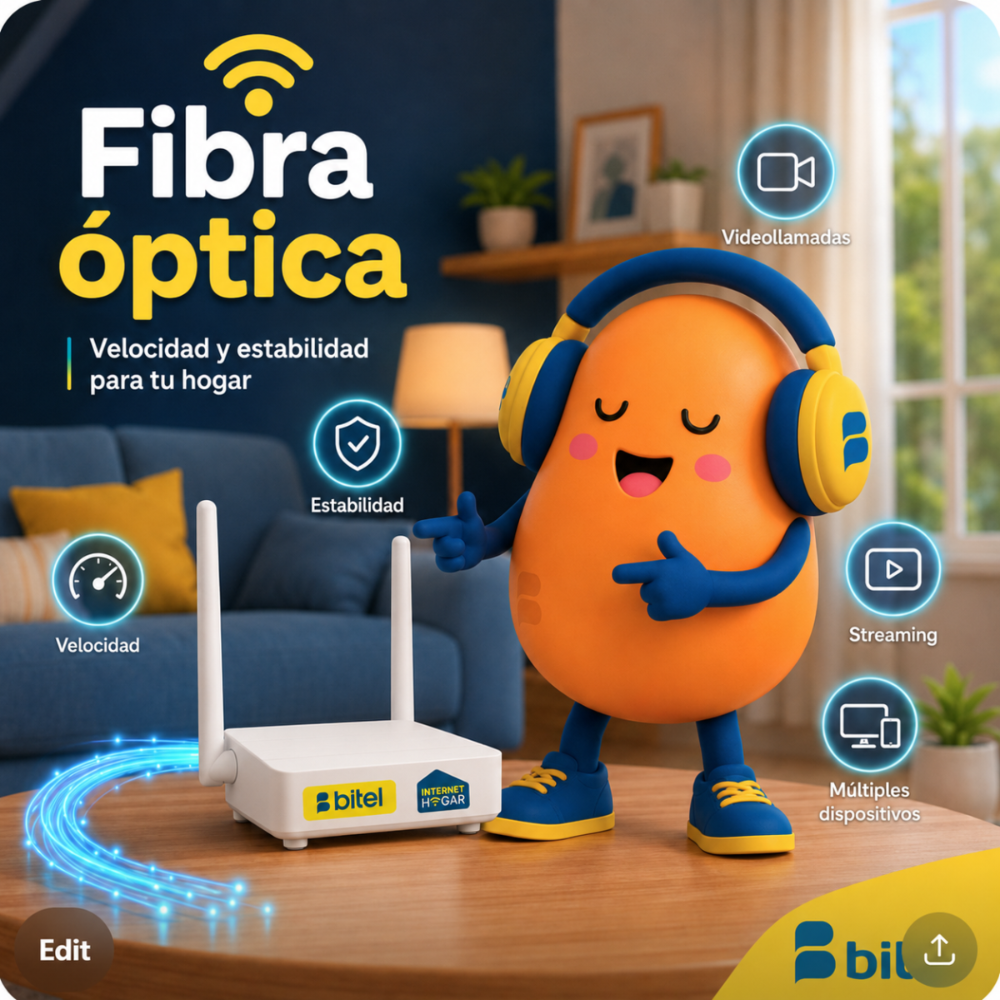
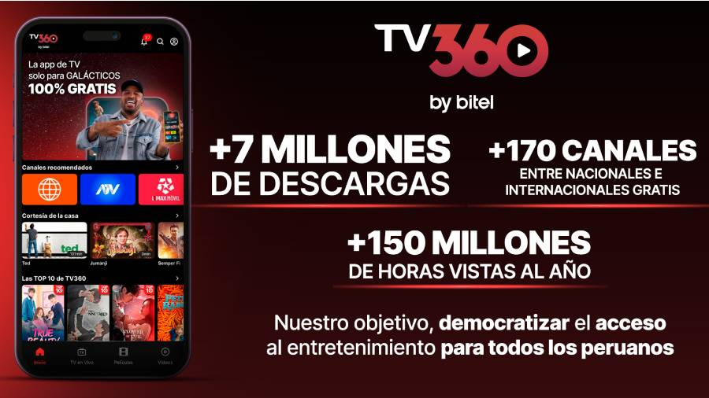
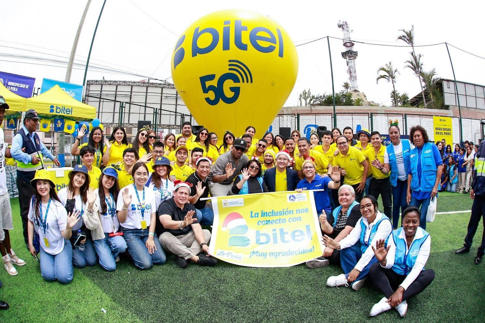
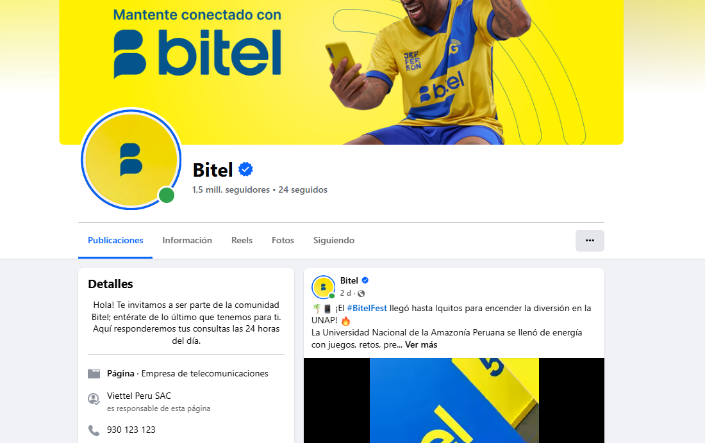
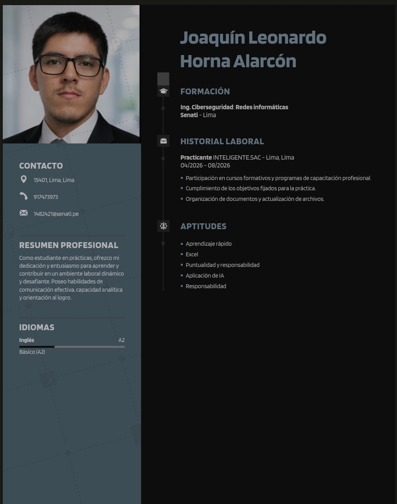

Estudio detallado del perfil empresarial, diagnóstico FODA, requerimientos operativos, planes de acción y dinámicas de networking de Viettel Perú S.A.C.

Bitel es el nombre comercial de Viettel Perú S.A.C., una filial del grupo multinacional de telecomunicaciones Viettel Group. Bitel inició sus operaciones comerciales en el Perú en octubre de 2014, rompiendo el histórico duopolio y consolidándose a través del despliegue de infraestructura y tarifas accesibles.
| Razón Social | Viettel Perú S.A.C. |
|---|---|
| Inicio de Operaciones | Octubre de 2014 |
| Infraestructura Clave | Más de 35,000 km de Fibra Óptica (la más extensa del país) |
| Core de Mercado | Zonas rurales, provincias y segmentos de bajo costo |
| Posición en el Mercado | 4° Operador móvil principal, líder en cobertura distrital |
Evaluación de los factores internos y externos que impactan el rendimiento y la proyección de Bitel en el ecosistema competitivo.
Para sostener su crecimiento, Bitel requiere cumplir con las siguientes necesidades:
Iniciativas tácticas para capitalizar las oportunidades del mercado.

Desplegar agresivamente la oferta de Bitel Fibra (FTTH) en Lima utilizando la red dorsal existente.

Desarrollar plataformas de entretenimiento y herramientas de productividad atadas a la suscripción mensual.

Aprovechar la presencia en provincias para licitar proyectos de digitalización y conectividad escolar.

